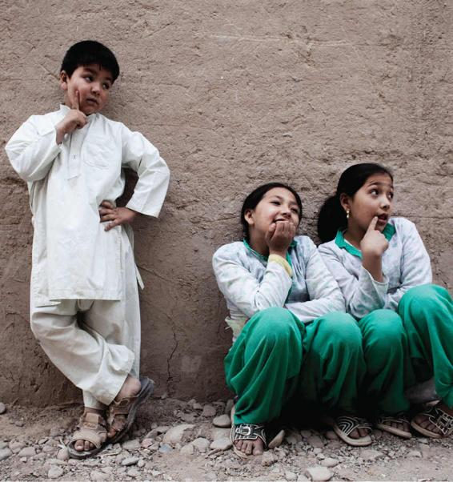

The subtle ways in which we do gender are so much a part of our lives that we don’t notice them until they are missing or radically altered. Cross-cultural research conducted by anthropologists, in particular, helps us recognize how deeply entrenched gendered categories are in the United States and shows us strong evidence that gender is fluid and socially constructed. After all, if gender differences were mostly the result of biology, then we could expect that gender roles would not vary much from culture to culture.
New Guinea
In her classic New Guinea study, Sex and Temperament in Three Primitive Societies, Margaret Mead (1963; orig. 1935) observed wide variability among gender role prescriptions—and such marked differences from those in the United States—that any claims to the universality of gender roles had to be rejected. Mead studied three separate tribes in New Guinea: In Arapesh society, both males and females generally exhibited characteristics and behaviors that would typically be associated with the Western female role. Both sexes among the Arapesh were passive, gentle, unaggressive, and emotionally responsive to the needs of others. In contrast, Mead found that in another New Guinea group, the Mundugumor, both the males and females were characteristically aggressive, suspicious, and, from a Western observer’s perspective, excessively cruel, especially toward children. In both cultures, however, men and women were expected to behave very similarly. In a third group, the Tchambuli tribe of New Guinea, gender roles of the males and females were almost exactly reversed from the roles traditionally assigned to males and females in Western society. Women “managed the business affairs of life” while “the men . . . painted, gossiped and had temper tantrums” (Mead, 1972).
The !Kung
The !Kung of the Kalahari Desert have specific gender roles, but it is very common for both men and women to engage in child care. Due to the nonconfrontational parenting practices of the !Kung, who oppose violent conflict and physical punishment, children learn that aggressive behavior will not be tolerated by either men or women. Although the !Kung abide by the seeming traditional arrangement where “men hunt and women gather,” the vast majority of the tribe’s food actually comes from the gathering activities of women (Draper, 1975). Women return from their gathering expeditions armed not only with food for the community but also with valuable information for hunters.
The Bacha Posh in Afghanistan
Formerly called Manoush, Mehran Rafaat, left, with her twin sisters, is regarded as a boy by her family. As a bacha posh, Mehran can work outside the home and appear in public without an escort.
In contemporary Afghanistan, boys are so highly prized that families with only daughters often experience shame and pity; as a result, some transform one young daughter into a son. The parents cut the girl’s hair short, dress her in boy’s clothes, change her name to a boy’s name, and encourage her to participate in “boys’ activities” such as bicycling and playing cricket. These children are called bacha posh, which translates into “dressed up as a boy.”
Parents of bacha posh believe that boys are afforded so many advantages in Afghan culture that it is helpful, rather than cruel, to transform their girls into boys. A bacha posh can more easily receive an education, work outside the home, even escort her sisters in public, allowing freedoms that are unheard of for girls in a society that strictly segregates men and women. In most cases, a return to womanhood takes place when the child enters puberty, a decision almost always made by her parents (Nordberg, 2010).
Blurring the Boundaries Between the Genders
Adherence to the gender binary, or the belief that only two genders (i.e., male and female) exist, is not universal. The Spaniards who came to both North and South America in the seventeenth century noticed men in the native tribes who had taken on the mannerisms of women, as well as women who occupied male roles.
Several Native American cultures hold a special honor for persons of “integrated genders.” For example, the Navajo term nádleehí literally means “one who constantly transforms” and refers to a male-bodied person with a feminine nature, a special gift according to Navajo culture. The Navajo believe that to maintain harmony, there must be a balanced interrelationship between the feminine and the masculine within a single individual. Native activists working to renew their cultural heritage adopted the English term two-spirit as useful shorthand to describe the entire spectrum of gender and sexual expression that is better and more completely described in their own languages (Nibley, 2011).
In the contemporary United States, growing numbers of young adults are challenging the male-female dichotomy and embracing both genders—or switching between the two. Eschewing labels such as “male” or “female,” a small but growing community of college-age adults in particular are instead choosing to identify as “androgyne,” “genderqueer,” “genderfluid,” “bigender,” “agender,” or “non-cis” (Schulman, 2013). “Non-cis” is shorthand for “non-cisgender.” The term cis is Latin for “on the same side as,” thus cisgender refers to a person whose gender identity matches his or her biological sex: for example, a person born male who identifies as a man. “Non-cis,” by contrast, refers to a person whose gender identity does not align with the sex the person was assigned at birth. Some choose to identify as a gender different from the one assigned at birth; these people, broadly described as transgender, may encompass those who move between genders, who live as a person of the opposite gender, or who use medical assistance to physically transition from one category to the other. Celebrities like Olympic athlete Caitlyn (formerly Bruce) Jenner and Jazz Jennings, the young transgender girl who is the focus of the reality show I Am Jazz, have drawn national and international attention to the experiences of transgender persons.
Although sociologists do not know for certain precisely how many individuals define their gender in ways beyond the male/female dichotomy, it soon may be possible to calculate a number in some parts of the world. Several nations have begun to collect official statistics on persons who identify as “third gender” or “third sex,” terms that encompass diverse experiences such as identifying as transgender or being born intersex. Intersex, like transgender, is a broad and diverse category may encompass those possessing both male and female genitalia or those with ambiguous genitalia. In 2011, Nepal became the first country to include a third gender category in its national census; India soon followed (Bochenek and Knight, 2012). By the end of 2013, a third sex option was available on passports in New Zealand and all “personal documents” in Australia. In Germany, parents now have the option of not specifying a child’s sex in birth registries. The intention is to allow babies born with biological characteristics of both sexes to make a choice about who they are once they get older. Under this new law, “individuals can . . . opt to remain outside the gender binary altogether” (Heine, 2013).
Taken together, anthropological and sociological studies of gender reveal that culture, not biology, underlies gender differences. Sociologists have noted that while society teaches “masculine” and “feminine” gender roles, such an approach does not explain where these roles come from or how they can be changed. For this, we need to delve into classic and contemporary theoretical perspectives that shed light on how gender roles and gendered inequalities are built into social institutions (Lorber, 1994).
CONCEPT CHECKS
What is the difference between sex and gender?
How do both biology and gender socialization contribute to differences between men and women?
What does it mean to say that gender is something we “do”? Give an example of a way you do gender in your daily life.
How can studies of other cultures contribute to the argument that gender is socially constructed?
Social Construction of Gender in Other Cultures
The subtle ways in which we do gender are so much a part of our lives that we don’t notice them until they are missing or radically altered. Cross-cultural research conducted by anthropologists, in particular, helps us recognize how deeply entrenched gendered categories are in the United States and shows us strong evidence that gender is fluid and socially constructed. After all, if gender differences were mostly the result of biology, then we could expect that gender roles would not vary much from culture to culture.
New Guinea
In her classic New Guinea study, Sex and Temperament in Three Primitive Societies, Margaret Mead (1963; orig. 1935) observed wide variability among gender role prescriptions—and such marked differences from those in the United States—that any claims to the universality of gender roles had to be rejected. Mead studied three separate tribes in New Guinea: In Arapesh society, both males and females generally exhibited characteristics and behaviors that would typically be associated with the Western female role. Both sexes among the Arapesh were passive, gentle, unaggressive, and emotionally responsive to the needs of others. In contrast, Mead found that in another New Guinea group, the Mundugumor, both the males and females were characteristically aggressive, suspicious, and, from a Western observer’s perspective, excessively cruel, especially toward children. In both cultures, however, men and women were expected to behave very similarly. In a third group, the Tchambuli tribe of New Guinea, gender roles of the males and females were almost exactly reversed from the roles traditionally assigned to males and females in Western society. Women “managed the business affairs of life” while “the men . . . painted, gossiped and had temper tantrums” (Mead, 1972).
The !Kung
The !Kung of the Kalahari Desert have specific gender roles, but it is very common for both men and women to engage in child care. Due to the nonconfrontational parenting practices of the !Kung, who oppose violent conflict and physical punishment, children learn that aggressive behavior will not be tolerated by either men or women. Although the !Kung abide by the seeming traditional arrangement where “men hunt and women gather,” the vast majority of the tribe’s food actually comes from the gathering activities of women (Draper, 1975). Women return from their gathering expeditions armed not only with food for the community but also with valuable information for hunters.
The Bacha Posh in Afghanistan
In contemporary Afghanistan, boys are so highly prized that families with only daughters often experience shame and pity; as a result, some transform one young daughter into a son. The parents cut the girl’s hair short, dress her in boy’s clothes, change her name to a boy’s name, and encourage her to participate in “boys’ activities” such as bicycling and playing cricket. These children are called bacha posh, which translates into “dressed up as a boy.”
Parents of bacha posh believe that boys are afforded so many advantages in Afghan culture that it is helpful, rather than cruel, to transform their girls into boys. A bacha posh can more easily receive an education, work outside the home, even escort her sisters in public, allowing freedoms that are unheard of for girls in a society that strictly segregates men and women. In most cases, a return to womanhood takes place when the child enters puberty, a decision almost always made by her parents (Nordberg, 2010).
Blurring the Boundaries Between the Genders
Adherence to the gender binary, or the belief that only two genders (i.e., male and female) exist, is not universal. The Spaniards who came to both North and South America in the seventeenth century noticed men in the native tribes who had taken on the mannerisms of women, as well as women who occupied male roles.
Several Native American cultures hold a special honor for persons of “integrated genders.” For example, the Navajo term nádleehí literally means “one who constantly transforms” and refers to a male-bodied person with a feminine nature, a special gift according to Navajo culture. The Navajo believe that to maintain harmony, there must be a balanced interrelationship between the feminine and the masculine within a single individual. Native activists working to renew their cultural heritage adopted the English term two-spirit as useful shorthand to describe the entire spectrum of gender and sexual expression that is better and more completely described in their own languages (Nibley, 2011).
In the contemporary United States, growing numbers of young adults are challenging the male-female dichotomy and embracing both genders—or switching between the two. Eschewing labels such as “male” or “female,” a small but growing community of college-age adults in particular are instead choosing to identify as “androgyne,” “genderqueer,” “genderfluid,” “bigender,” “agender,” or “non-cis” (Schulman, 2013). “Non-cis” is shorthand for “non-cisgender.” The term cis is Latin for “on the same side as,” thus cisgender refers to a person whose gender identity matches his or her biological sex: for example, a person born male who identifies as a man. “Non-cis,” by contrast, refers to a person whose gender identity does not align with the sex the person was assigned at birth. Some choose to identify as a gender different from the one assigned at birth; these people, broadly described as transgender, may encompass those who move between genders, who live as a person of the opposite gender, or who use medical assistance to physically transition from one category to the other. Celebrities like Olympic athlete Caitlyn (formerly Bruce) Jenner and Jazz Jennings, the young transgender girl who is the focus of the reality show I Am Jazz, have drawn national and international attention to the experiences of transgender persons.
Although sociologists do not know for certain precisely how many individuals define their gender in ways beyond the male/female dichotomy, it soon may be possible to calculate a number in some parts of the world. Several nations have begun to collect official statistics on persons who identify as “third gender” or “third sex,” terms that encompass diverse experiences such as identifying as transgender or being born intersex. Intersex, like transgender, is a broad and diverse category may encompass those possessing both male and female genitalia or those with ambiguous genitalia. In 2011, Nepal became the first country to include a third gender category in its national census; India soon followed (Bochenek and Knight, 2012). By the end of 2013, a third sex option was available on passports in New Zealand and all “personal documents” in Australia. In Germany, parents now have the option of not specifying a child’s sex in birth registries. The intention is to allow babies born with biological characteristics of both sexes to make a choice about who they are once they get older. Under this new law, “individuals can . . . opt to remain outside the gender binary altogether” (Heine, 2013).
Taken together, anthropological and sociological studies of gender reveal that culture, not biology, underlies gender differences. Sociologists have noted that while society teaches “masculine” and “feminine” gender roles, such an approach does not explain where these roles come from or how they can be changed. For this, we need to delve into classic and contemporary theoretical perspectives that shed light on how gender roles and gendered inequalities are built into social institutions (Lorber, 1994).
CONCEPT CHECKS